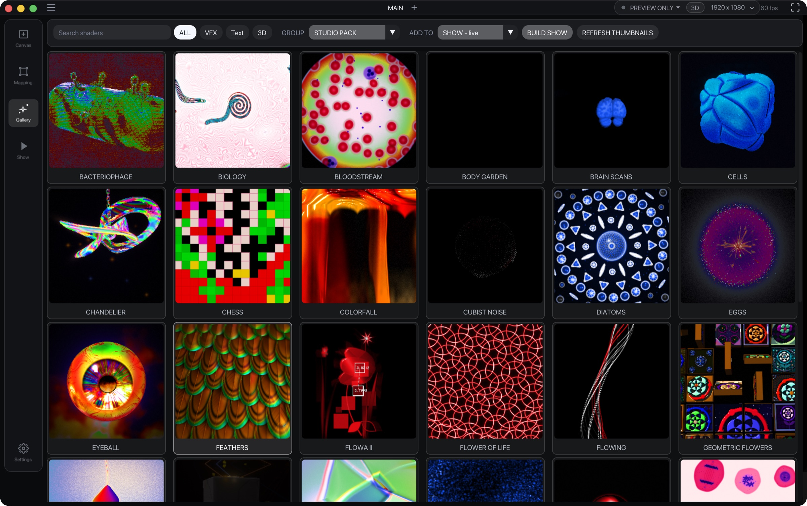
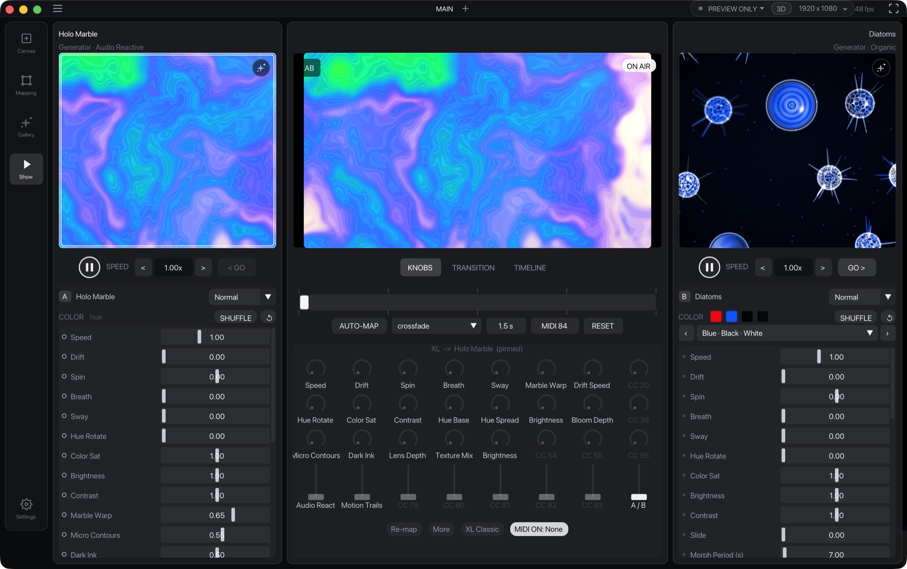

Easel Studio
Shaders, sound and surfaces in one instrument.
Free. For Mac and Windows.

The full ShaderClaw library ships inside the app. Open it and the Studio Pack is ready to play. No account, no connection needed.
Shaders, each with motion, colour and texture controls.
Studio Pack shaders, ready in the gallery and on both decks.
Accounts or connections required. It runs offline.
Cue a shader, shape it, take it live. Launch Control XL maps itself.

Paste one line. Easel installs itself and opens.
In Terminal
curl -fsSL https://g3993.github.io/easel/install.sh | bashRequires Apple silicon and macOS 26 or later. On first launch, allow Screen & System Audio Recording so Easel can hear your music. If macOS says a downloaded app is damaged, run xattr -dr com.apple.quarantine /Applications/Easel.app.
In PowerShell
irm https://g3993.github.io/easel/install.ps1 | iexWindows 10 or 11, 64-bit. If SmartScreen appears, choose More info, then Run anyway. For NDI, install the NDI Runtime from ndi.video.
ShaderClaw is where the shaders are made. Save one into the library and it appears in Easel.
Latest release
Apple silicon (M1 or later)
macOS 26 Tahoe or later
Windows 10 or 11, 64-bit
GPU with OpenGL 4.1
357 ShaderClaw shaders, Studio Pack of 34
Optional live library at ~/ShaderClaw3
Two decks with crossfader and transitions
Timeline, show builder, groups
System audio, microphone, MIDI
Camera, screen and window capture, NDI
Multiple projectors with warping and masks
NDI, recording
Projects and settings live in ~/.easel and are kept when you update.